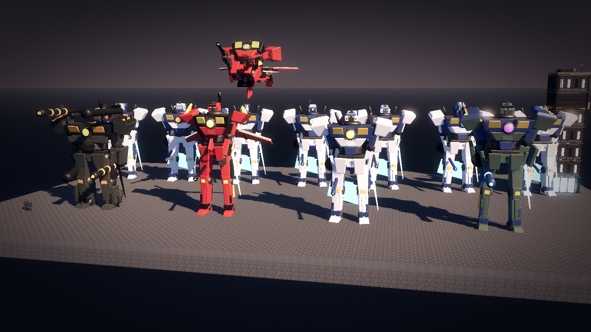
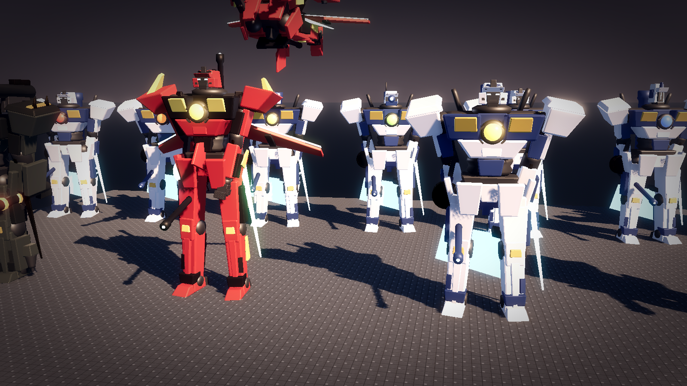
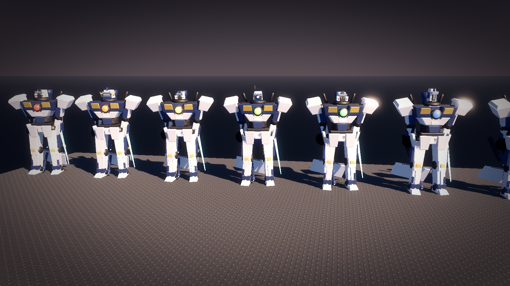
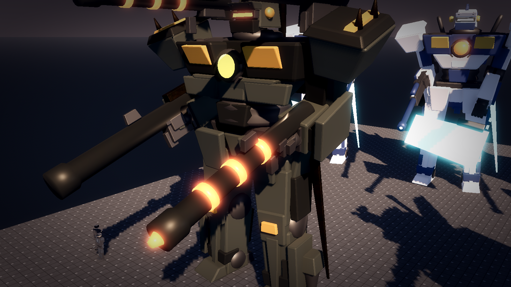
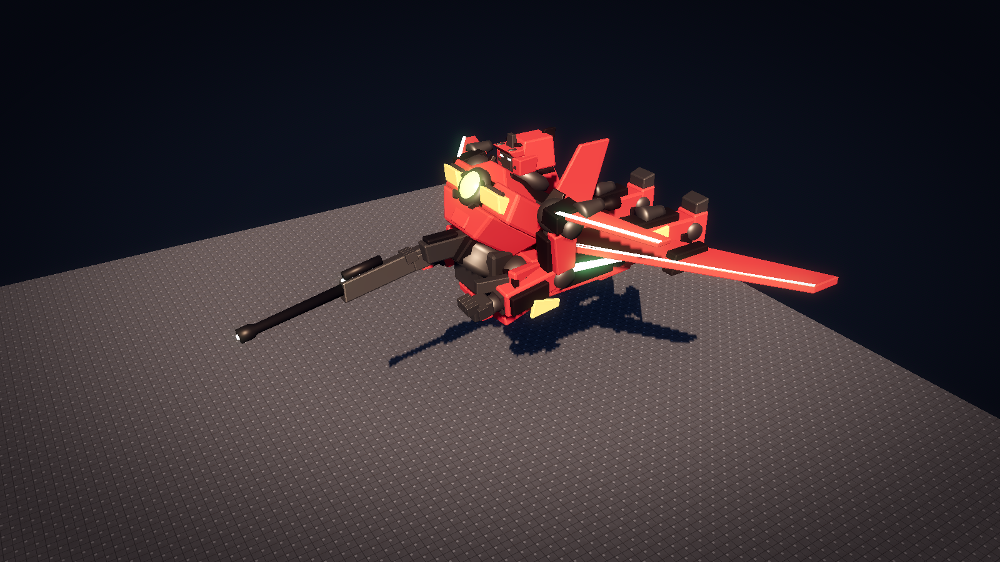
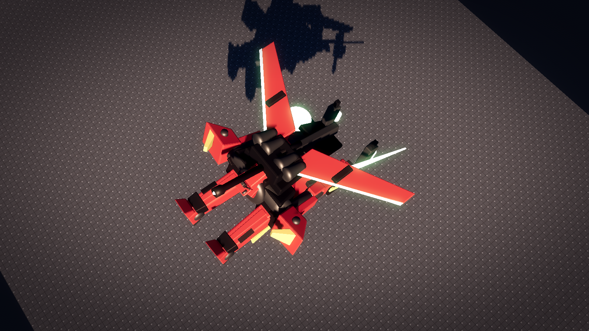
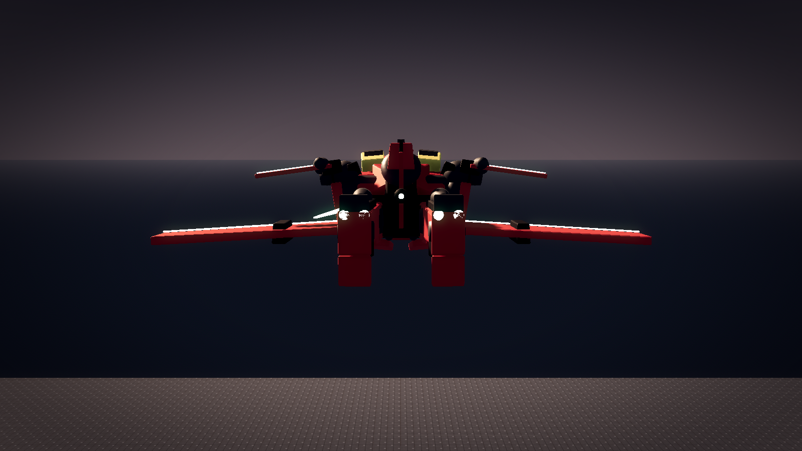
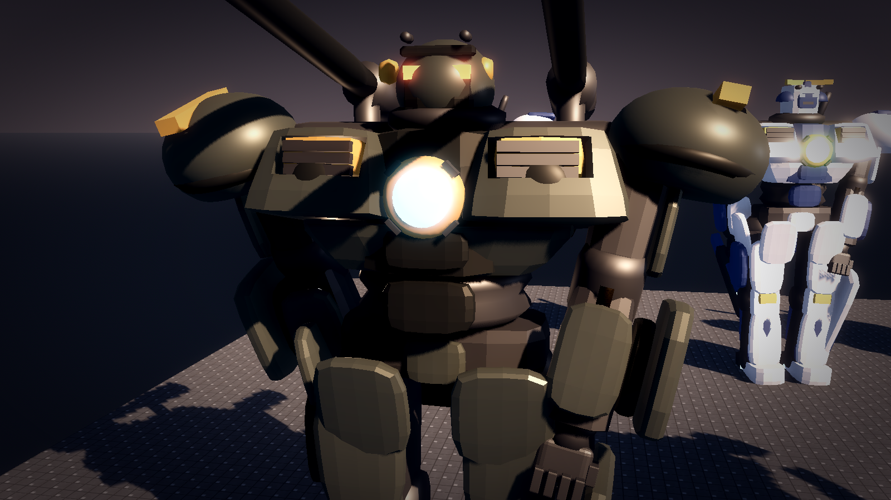
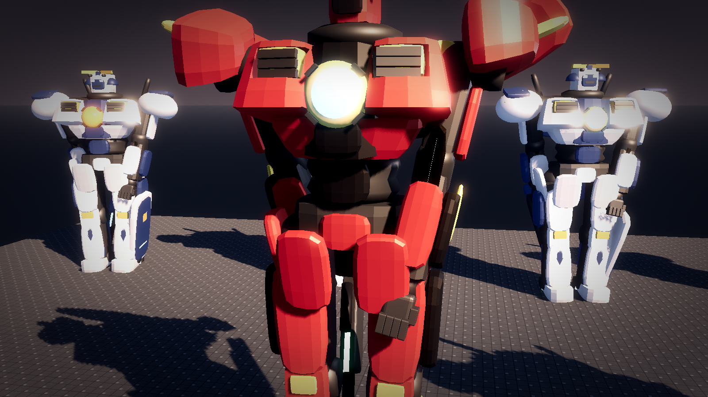
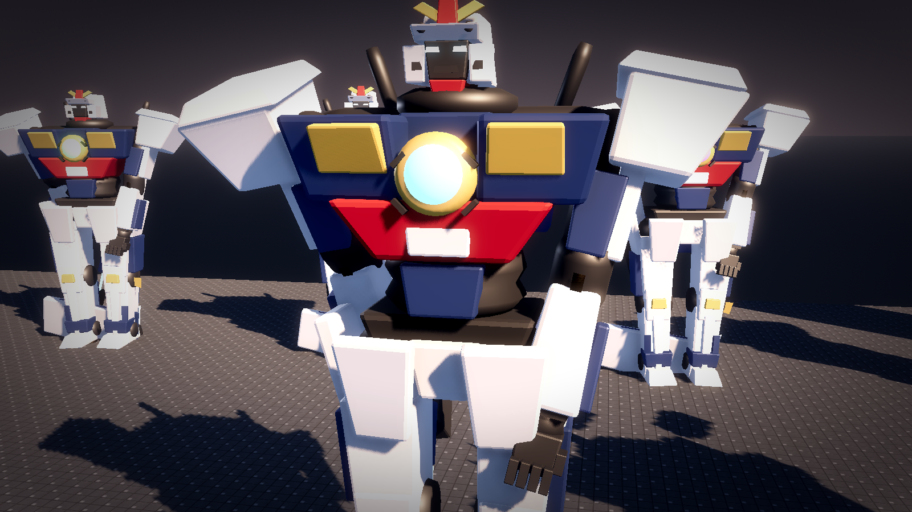

G11 機体(大型人型ロボット)と人間
2026-10-14 作成。案(承認待ち)。ロボットは 15〜20 m の大型機体に改めた(2026-10-14 決定)。本作のデザインの核心。目標は PSP 世代のガンダム作品程度の密度。
1. 寸法の基準(確定)
| 項目 | 値 | 備考 |
|---|---|---|
| 1 セル | 1 m | ボクセルの 1 ブロック。設備の床面積の単位。 |
| 人間の身長 | 1.7 m(市民)、1.72 m(兵士) | 作業服と兜。装甲の有無で市民と兵士を分ける。 |
| 階高 | 3 m(3 セル) | 階モジュールを作り直した。窓・扉・渡り廊下の高さも追従。 |
| 設備 | 1 セル角、高さ 1〜2 セル | 炉・組立機・採掘機・ベルト・インサータ・箱・タンク・電柱(2026-10-15 作り直し済み。G10)。 |
| 機体 | 15〜17 m(系統で差) | 5〜6 階分。格納庫は 12x12 m・6 階分(18 m)、航空戦艦は甲板高 3 m の多層船体で格納庫区画は 19 m の高さ(2026-10-15 作り直し済み)。 |
2. 機体のキャラクリ(部品の組み替え)
2026-10-14 方針転換。一体ごとの固定モデルをやめ、部位の部品を取り付け口で組む。プレイヤーが部位ごとに部品と配色を選ぶ(キャラクリ)。世代はリアクターの色で表す(2026-10-14 指示)。
生成は tools/blender/make_mech_parts.py(部品 25 点 → game/assets/mech/*.glb と game/data/mech_parts.json)、組み立ては game/scripts/MechBuilder.cs。造形の基本形は「面取りした台形塊」(上下で大きさの違う矩形を結び、前傾・外開き・ずらしを掛け、小さな面取りを入れた多面体)で、平面と稜が立つ見た目にする(2026-10-14「肩が丸すぎる」への対応で、丸い殻と半球の肩は廃止)。関節・リアクター・スラスター・銃身は回転体、関節の覆いは球の切り出し。ガンダム系から採るのはプロポーション(長めの脚・細い腰・張った肩)・かかと・膝・肩の構造までに限り、配色と記号(三色の胸・黄の V 字の角・赤い下胸)は使わない(2026-10-14 指示)。
| 部位(取り付け口) | 重装 | 高速 | 汎用 |
|---|---|---|---|
| 胴(首・左右の肩・左右の股・背部・腰左右・腰背部の口と、腰の節を持つ) | 幅広。胸の追加装甲板 | 細身。胸を側面視で楔形(上へ行くほど後ろへ傾く前面・薄い奥行き・後傾した吸気口・引っ込めたリアクター)にし、胸の上に後傾する覆い、細い肩の横梁と襟、薄い背面板。戦闘機モードで胸の前面がほぼ水平になり正面投影面積が小さくなる(2026-10-14)。胸の縁の鰭 | 下胸の台形塊、左右の胸郭塊(前傾・外開き、前上面に差し色の吸気口と羽板)、中央の芯とリアクター、肩の横梁、襟、腹の蛇腹、腰装甲(前・横・後ろ) |
| 頭(首の口に付く) | 系統を問わず 6 種の顔から選ぶ(2026-10-14 指示でレパートリー化)。双眼(twin: 暗い面と双眼・頬と口の通気口・センサー翼)、バイザー(visor: 横一文字の発光・厚い顎・両側のセンサー・額の鶏冠)、鋭い双眼(fast: 長いセンサー翼と後頭部の鰭)、単眼(mono: 中央の大きなレンズと環・動力管・アンテナ)、4 目(quad: 上下 2 段の小さな眼)、縦長(tall: 狭く高い兜に縦のスリット眼と額の稜)。既定は重装=バイザー、高速=鋭い双眼、汎用=双眼。 | ||
| 腕(肩の口に付く。肘の空で曲げる。手に武装の口) | 太い。張り出した肩塊に上板と溝、棘 2 本、前腕の盾板 | 細い。肩は小さな羽根(人型では立てて肩当て、戦闘機モードでは水平に広げて前翼)、肩のスラスター、前腕の鰭 | 上が広く張り出す角張った肩塊 + 上板 + 外側の縁、上腕(回転体の骨組み + 外側と前面の装甲)、手首へ広がる前腕 + 肘当て、手の甲の板、5 本指の手 |
| 脚(股の口に付く。膝の空で曲げる) | 太く短い。脛の追加装甲 | 細く長い。ふくらはぎのスラスター、脛の鰭 | 股側が太い腿塊 + 前面と外側の装甲、角張った膝当て、足首へ細る脛塊 + 前面の縦の稜 + 斜めの通気口、ふくらはぎ、足(本体・爪先の楔・かかと)、足首の覆い、足裏の噴射口 |
| 背部(背部の口に付く) | 肩上の大砲 2 門、スラスター 2 基 | 後退した主翼 2 枚(発光する縁)と垂直尾翼、スラスター 4 基 | スラスター 2 基、サーベル 2 本 |
| 移動方式 | 飛べない。足の外側のホバーポッドで陸上を速めに移動(燃料を消費) | 飛行。戦闘機モードに変形(下図。フラッグの変形法 2026-10-14 指示: 立ち姿から腰の節で後ろへ折り曲げて腰から下(骨盤・腰装甲・脚)を水平に後ろへ伸ばし(股関節ではなく腰で折る 2026-10-14。胸の傾き 55 度 + 90 度 = 腰の折れ 145 度。頭は胸に沈める)、胸は後ろへ仰け反らせ、背負った翼を水平に展開する。顔は前を向き、腕は肘を 90 度折って腰だめにライフルを前に構える。肩の羽根は水平に広げて前翼にする) | 飛行(低速) |
| 翼(背面の架に付く) | なし | 大きな後退翼 2 枚(発光する前縁・翼端のポッド)と垂直尾翼。左右の翼は節で回り、人型では下向きに畳み、戦闘機モードでは水平に展開する | なし |
| 武装(手・肩上・腰左右・腰背部の口に付く) | バズーカ・ライフル・サブマシンガン・剣・鞭・盾の 6 種 × ビーム / 実弾(物理)の 2 系 = 12 部品。装備上限は下表。腰左右の口には近接武器(剣・鞭)を柄を上にして 1 つずつ吊り、腰背部の口には任意の武器 1 つを予備として格納する(上限に数えない)。重装は肩上の架にバズーカを左右 1 本ずつ載せられる。 | ||
| 武器 | 重装 | 高速 | 汎用 | ダメージ |
|---|---|---|---|---|
| バズーカ | 肩 2 + 腕 2 = 4 本 | 不可 | 腕 1 本 | (計算は保留) |
| ライフル | 腕 2 本 | 腕 1 本 | 腕 2 本 | (計算は保留) |
| サブマシンガン | 腕 2 本 | 腕 2 本 | 腕 2 本 | (計算は保留) |
| 剣(近接) | 腕 2 本 | 腕 2 本 | 腕 2 本 | 速度 × 重量 |
| 鞭(近接) | 腕 2 本 | 腕 2 本 | 腕 2 本 | 速度 |
| 盾(物理 / ビーム) | 腕 2 つ | 腕 1 つ | 腕 1 つ | |
| 予備(腰背部) | 全機種 1 つ。上限に数えない | |||
| 近接武器の吊り(腰左右) | 全機種 左右 1 つずつ | |||
規則は game/data/mech_parts.json の weapons に持つ(上限・ダメージ式の名前)。装備の検証と計算は手順 3 以降で実装する。盾は物理(板)とビーム(前腕の発振器から広がる面)の 2 種(2026-10-14)。
配色は主色・副色・差し色・発光色の 4 色を機体ごとに与える(GLB の材質名 M_Main / M_Sub / M_Trim / M_GlowMech を Godot で差し替える)。関節と骨組み(M_Frame)は暗い金属で固定。
| 世代 | リアクターの色 | 備考 |
|---|---|---|
| 第 0 工作機 | 赤 | 世代は第 1〜第 6 の 6 つ(2026-10-14 指示)。工作機は世代の前段として第 0 に置く。造形は世代で変えない(系統と部品の選択で決まる)。世代は胸のリアクター(環 + 発光する皿)の色だけで見分ける。 第 5 世代は不完全なステルス、第 6 世代は完全なステルスで目視でしか確認できない(ミサイルは弾幕か偶然以外で当たらない)。第 6 世代の部品は第 5 世代の最優良 0.1% の製品からしか作れない。工場の世代は第 5 世代まで(第 6 世代の工場は存在しない)。ステルスの描画(第 5 は半ば透ける、第 6 はレーダー表示に出ない)は未着手。 |
| 第 1 世代 | 橙 | |
| 第 2 世代 | 黄 | |
| 第 3 世代 | 黄緑 | |
| 第 4 世代 | 緑 | |
| 第 5 世代 不完全なステルス | 青 | |
| 第 6 世代 完全なステルス | 紫 |
既定の 3 機(プリセット): 重装(暗い緑灰・橙の発光。腕にバズーカ 2、肩上にバズーカ 2、腰に剣と鞭、予備にライフル)、高速(赤・黄緑の発光。右手にビームライフル、腰にビーム剣とビーム鞭、予備にビームライフル)、汎用(白と青・水色の発光。腕にビームライフルとビーム盾、腰にビーム剣と鞭、予備にバズーカ)。組み替え例として「汎用の胴と頭 + 重装の腕と背部 + 高速の脚 + 大砲と刃」(第 6 世代の紫)を展示の右端に置いた。










全高(足元から頭頂): 重装 約 15 m、汎用 約 15.7 m、高速 約 17 m(脚を長めにした)。腕と脚の長さは JSON に持ち、胴の高さは脚の長さから自動で決まる。
3. 人間
tools/blender/make_characters.py。市民(作業服・小さな兜とバイザー)と兵士(作業服の上に胸甲と肩当て・兜・背嚢・小銃)。身長 1.7 m。路上・切り取り表示の内部・工場区画に置く。
4. 次に詰める候補
- リアクターの発光の強さ: 近景ではグローで白に寄る。遠景で色が読める強さと近景で色が残る強さの折り合い。
- 部品の種類を増やす: 各部位に 3 系統 × 複数の候補(頭 6 種、肩 6 種など)。腰装甲・手首・足を独立した部位にするか。
- 細部の密度: 装甲の重ね数、パネルラインの本数、関節の露出部(ケーブル・シリンダー)、識別番号のデカール。
- 姿勢: 待機・歩行・射撃・作業の 4 姿勢。関節は親子の空(Empty)で回せる構造にしてある。戦闘機モードは部品の姿勢だけで作っており、機首の覆いや脚の収納カバーなど変形専用の部品は未作成。変形は 2026-10-14 指示の手順(腰で後ろへ折る・胸の仰け反り・翼の展開・顔は前・肘を 90 度折って腰だめにライフル・肩の羽根が前翼)に従う。
- 品質差: 同じ部品でも仕上げの差(塗装の剥げ・発光の強さ・部品の欠け)。